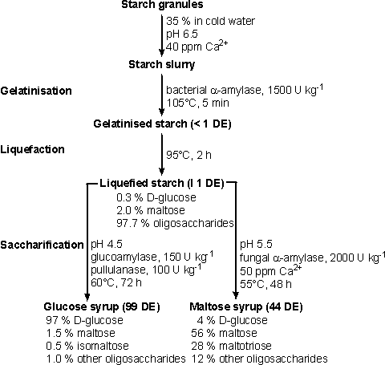
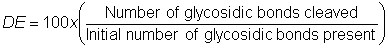
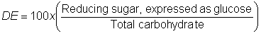

Enzyme Technology
The use of enzymes in starch hydrolysis
Starch is the commonest storage carbohydrate in plants. It
is used by the plants themselves, by microbes and by higher organisms so there
is a great diversity of enzymes able to catalyse its hydrolysis. Starch from all
plant sources occurs in the form of granules which differ markedly in size and
physical characteristics from species to species. Chemical differences are less
marked. The major difference is the ratio of amylose to amylopectin; e.g., corn
starch from waxy maize contains only 2% amylose but that from amylomaize is
about 80% amylose. Some starches, for instance from potato, contain covalently
bound phosphate in small amounts (0.2% approximately), which has significant
effects on the physical properties of the starch but does not interfere with its
hydrolysis. Acid hydrolysis of starch has had widespread use in the past. It is
now largely replaced by enzymic processes, as it required the use of corrosion
resistant materials, gave rise to high colour and saltash content (after
neutralisation), needed more energy for heating and was relatively difficult to
control.

Figure 4.2. The use of enzymes in processing starch.
Typical conditions are given.
Of the two components of starch, amylopectin presents the
great challenge to hydrolytic enzyme systems. This is due to the residues
involved in a-1,6-glycosidic branch points which constitute about
4 - 6% of the
glucose present. Most hydrolytic enzymes are specific for a-1,4-glucosidic links
yet the a-1,6-glucosidic links must also be cleaved for complete hydrolysis of
amylopectin to glucose. Some of the most impressive recent exercises in the
development of new enzymes have concerned debranching enzymes.
It is necessary to hydrolyse starch in a wide variety of
processes which m be condensed into two basic classes:
- processes in which
the starch hydrolysate is to be used by microbes or man, and
- processes in
which it is necessary to eliminate starch.
In the former processes, such as glucose syrup production,
starch is usually the major component of reaction mixtures, whereas in the
latter processes, such as the processing of sugar cane juice, small amounts of
starch which contaminate non-starchy materials are removed. Enzymes of various
types are used in these processes. Although starches from diverse plants may be
utilised, corn is the world's most abundant source and provides most of the
substrate used in the preparation of starch hydrolysates.
There are three stages in the conversion of starch (Figure
4.2):
- gelatinisation, involving the dissolution of the nanogram-sized starch
granules to form a viscous suspension;
- liquefaction, involving the partial
hydrolysis of the starch, with concomitant loss in viscosity; and
- saccharification, involving the production of glucose and maltose by further
hydrolysis.
Gelatinisation is achieved by heating starch with water, and occurs
necessarily and naturally when starchy foods are cooked. Gelatinised starch is
readily liquefied by partial hydrolysis with enzymes or acids and saccharified
by further acidic or enzymic hydrolysis.
The starch and glucose syrup industry uses the expression
dextrose equivalent or DE, similar in definition to the DH units of proteolysis,
to describe its products, where:

(4 .2)
In practice, this is usually determined analytically by
use of the closely related, but not identical, expression:

(4 .3)
Thus, DE represents the percentage hydrolysis of the
glycosidic linkages present. Pure glucose has a DE of 100, pure maltose has a DE
of about 50 (depending upon the analytical methods used; see equation (4.3)) and
starch has a DE of effectively zero. During starch hydrolysis, DE indicates the
extent to which the starch has been cleaved. Acid hydrolysis of starch has long
been used to produce 'glucose syrups' and even crystalline glucose (dextrose
monohydrate). Very considerable amounts of 42 DE syrups are produced using acid
and are used in many applications in confectionery. Further hydrolysis using
acid is not satisfactory because of undesirably coloured and flavoured breakdown
products. Acid hydrolysis appears to be a totally random process which is not
influenced by the presence of a-1,6-glucosidic linkages.
Table 4.2 Enzymes used in starch hydrolysis
|
Enzyme
|
EC number
|
Source
|
Action
|
|
a-Amylase
|
3.2.1.1
|
Bacillus amyloliquefaciens
|
Only a-1,4-oligosaccharide links are cleaved to give
a-dextrins and
predominantly maltose (G2), G3, G6 and G7 oligosaccharides
|
|
B. licheniformis
|
Only a-1,4-oligosaccharide links are cleaved to give a-dextrins
and predominantly maltose, G3, G4 and G5 oligosaccharides
|
|
Aspergillus oryzae, A. niger
|
Only a-1,4 oligosaccharide links are cleaved to give a-dextrins
and predominantly maltose and G3 oligosaccharides
|
|
Saccharifying a-amylase
|
3.2.1.1
|
B. subtilis (amylosacchariticus)
|
Only a-1,4-oligosaccharide links are cleaved to
give a-dextrins with
maltose, G3, G4 and up to 50% (w/w) glucose
|
|
b-Amylase
|
3.2.1.2
|
Malted barley
|
Only a-1,4-links are cleaved, from non-reducing
ends, to give limit dextrins and b-maltose
|
|
Glucoamylase
|
3.2.1.3
|
A. niger
|
a-1,4
and a-1,6-links are cleaved, from the nonreducing ends, to give b-glucose
|
|
Pullulanase
|
3.2.1.41
|
B. acidopullulyticus
|
Only a-1,6-links
are cleaved to give straight-chain maltodextrins
|
The nomenclature of the enzymes used commercially for
starch hydrolysis is somewhat confusing and the EC numbers sometimes lump
together enzymes with subtly different activities (Table 4.2). For example,
a-amylase may be subclassified as liquefying or saccharifying amylases but even
this classification is inadequate to encompass all the enzymes that are used in
commercial starch hydrolysis. One reason for the confusion in the nomenclature
is the use of the anomeric form of the released reducing group in the product
rather than that of the bond being hydrolysed; the products of bacterial and
fungal a-amylases are in the a-configuration and the products of b-amylases are
in the b-configuration, although all these enzymes cleave between a-1,4-linked
glucose residues.
The a-amylases (1,4-a-D-glucan glucanohydrolases) are
endohydrolases which cleave 1,4-a-D-glucosidic bonds and can bypass but cannot
hydrolyse 1,6-a-D-glucosidic branchpoints. Commercial enzymes used for the
industrial hydrolysis of starch are produced by Bacillus amyloliquefaciens
(supplied by various manufacturers) and by B. licheniformis (supplied by Novo
Industri A/S as Termamyl). They differ principally in their tolerance of high
temperatures, Termamyl retaining more activity at up to 110°C, in the presence
of starch, than the B. amyloliquefaciens a-amylase. The maximum DE obtainable
using bacterial a-amylases is around 40 but prolonged treatment leads to the
formation of maltulose (4-a-D-glucopyranosyl-D-fructose), which is resistant to
hydrolysis by glucoamylase and a-amylases. DE values of 8-12 are
used in most commercial processes where
further saccharification is to occur. The principal
requirement for liquefaction to this extent is to reduce the viscosity of the
gelatinised starch to ease subsequent processing.
Various manufacturers use different approaches to starch
liquefaction using a-amylases but the principles are the same. Granular starch
is slurried at 30-40% (w/w) with cold water, at pH 6.0-6.5, containing 20-80 ppm
Ca2+ (which stabilises and activates the enzyme) and the enzyme is added (via a
metering pump). The a-amylase is usually supplied at high activities so that the
enzyme dose is 0.5-0.6 kg tonne−1 (about 1500 U kg−1 dry matter) of starch. When
Termamyl is used, the slurry of starch plus enzyme is pumped continuously
through a jet cooker, which is heated to 105°C using live steam. Gelatinisation
occurs very rapidly and the enzymic activity, combined with the significant
shear forces, begins the hydrolysis. The residence time in the jet cooker is
very brief. The partly gelatinised starch is passed into a series of holding
tubes maintained at 100-105°C and held for 5 min to complete the gelatinisation
process. Hydrolysis to the required DE is completed in holding tanks at
90-100°C for 1 to 2 h. These tanks contain baffles to discourage backmixing.
Similar processes may be used with B. amyloliquefaciens a-amylase but the
maximum temperature of 95°C must not be exceeded. This has the drawback that a
final 'cooking' stage must be introduced when the required DE has been attained
in order to gelatinise the recalcitrant starch grains present in some types of
starch which would otherwise cause cloudiness in solutions of the final product.
The liquefied starch is usually saccharified but
comparatively small amounts are spray-dried for sale as 'maltodextrins' to the
food industry mainly for use as bulking agents and in baby food. In this case,
residual enzymic activity may be destroyed by lowering the pH towards the end of
the heating period.
Fungal a-amylase also finds use in the baking industry. It
often needs to be added to bread-making flours to promote adequate gas
production and starch modification during fermentation. This has become
necessary since the introduction of combine harvesters. They reduce the time
between cutting and threshing of the wheat, which previously was sufficient to
allow a limited sprouting so increasing the amounts of endogenous enzymes. The
fungal enzymes are used rather than those from bacteria as their action is
easier to control due to their relative heat lability, denaturing rapidly during
baking.
Home
| Back | Next
This page was established in 2004 and last updated by Martin
Chaplin
on
6 August, 2014
|